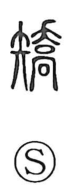

矯

Kun: tameru | On: kyo
to straighten ・ to correct ・ to reform ・ to train ・ to feign ・ to falsify
Explanation
矯 is a phono-semantic compound: the semantic element is the arrow (矢), and the phonetic is 喬 (kyo). In ancient imagery, 喬 shows a sign tree raised on a high gate tower (高), a ritual setup for summoning the gods; at such watchtower gates, apotropaic rites were performed to repel and set right baleful influences. With the arrow bringing in the concrete notion of straightening—early forms even depict hands attending an arrow—the character came to mean putting what is bent in order. It could also be used for the idea of feigning or falsifying (as in 矯枉), while the later and more familiar sense is to train, reform, and correct: to adjust shape, rectify, and set things straight.